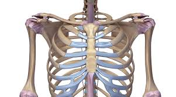

पसली

- (पसली लेख में मानव शरीर से संबंधित उल्लेख है।
- उरोस्थि के साथ मिलकर पसलियाँ वक्ष पिंजर का निर्माण करती हैं। इसके अन्दर हृदय और फेफड़े सुरक्षित रहते हैं।
- पसलियाँ संख्या में 24 होती हैं तथा वक्ष में दोनों ओर 12-12 स्थित होती हैं।
- मनुष्य के वक्षीय कटघरे में 12 जोड़ी लम्बी, सँकरी, पट्टीनुमा पसलियाँ होती हैं।
- ये कमान की भाँति झुकी हुई व पीछे की ओर वक्षीय कशेरुकाओं से तथा आगे की ओर उरोस्थि से सन्धित रहती हैं।
- नीचे की 11वीं तथा 12वीं जोड़ी की पसलियों के अन्तिम सिरे स्वतंत्र रहते हैं। इन्हें प्लावी पसलियाँ कहते हैं।